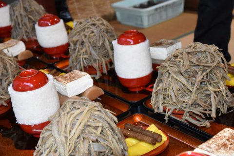

て ： てんこ盛り！ ご飯とごぼうの ごぼう講
一言でいうと？
茶碗いっぱいのご飯とごぼうを食べる伝統行事

惣田正月十七日講(そうでんしょうがつじゅうしちにちこう)またの名を「ごぼう講」！
越前市国中町で江戸時代から続く行事で、変わった様子から奇祭といわれています。
▼ごぼう講の様子
ごぼう講の歴史は？
いろんな説があるが、歴史は300年！
毎年旧暦の正月17日(2月17日)に神事を行い、山盛りのごぼう料理を食べて直会(なおらい)という神事の後の会食をする行事が300年余りの間続けられてきました。
町内にある国中神社の隠し田の米をお殿様に内緒で食べたことが始まりという説もありますが、信仰や頼母子講(たのもしこう)という、年貢を納められない人を神社の蓄えで助け、村からの流出を防いで結束を固めることが目的だったと考えられています。
どのくらい多いの？
お米は5合、ごぼうは20本分⁉
ご飯は「物相飯（もっそうめし）」といい、茶碗に5合分ものご飯を高さ約15cmに積み上げたもの。重さはなんと推定1750グラム！
一方、皿からあふれるほど山盛りにされた味噌和えのごぼうは、ごぼうを切らずにたたいて割いたもので、本数的には約20本使用しているのだとか！
その他、二つ割りのたくあん2本、丸揚げにしたごぼう2本と焼き豆腐1丁。これが一人分なんだそうです。多い！
ごぼう講は、越前かるたを作り始めてはじめて知った文化の一つです。実際に見たことはないのですが、写真を見てあまりの量に仰天しました！どんな味がするのでしょうか、いつか食べてみたいなと思います。(さすがにこの量は食べきれないかな…)